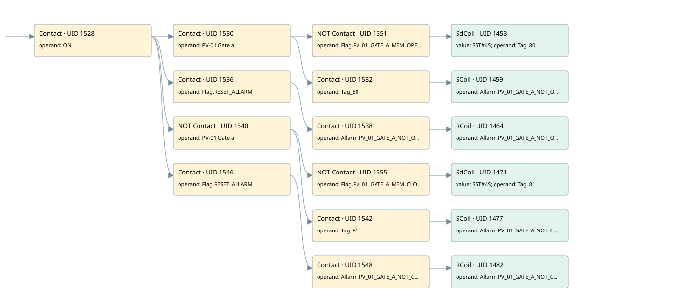

pv01
allarms 1 · 검색 색인 순서 35 · 원본 내부 NID 추정 42
백업 PLF 원본의 3065746 바이트 위치에서 복원한 XML. 검색 문서 1815의 객체 키 161022007562000000000000와 연결했다. 이름 해석 19/19개. 남은 RefId는 상수 또는 미해석 참조다.
연결 구조 다시 그리기
원본 Part/PCon/Wire를 이용한 연결도다. TIA 화면의 래더 배치 또는 실행 결과를 재현한 그림은 아니다. 핀 연결은 아래 표와 원본 XML을 기준으로 읽는다. 노드 위에 마우스를 두면 피연산자 이름을 볼 수 있다.

접점·코일·블록과 피연산자
| Part UID | Gate | Negated 핀 | 연결 피연산자 |
|---|---|---|---|
| 1528 | Contact | operand = ON | |
| 1530 | Contact | operand = PV-01 Gate a | |
| 1551 | Contact | operand | operand = Flag.PV_01_GATE_A_MEM_OPEN |
| 1453 | SdCoil | value = S5T#4S; operand = Tag_80 | |
| 1532 | Contact | operand = Tag_80 | |
| 1459 | SCoil | operand = Allarm.PV_01_GATE_A_NOT_OPEN | |
| 1536 | Contact | operand = Flag.RESET_ALLARM | |
| 1538 | Contact | operand = Allarm.PV_01_GATE_A_NOT_OPEN | |
| 1464 | RCoil | operand = Allarm.PV_01_GATE_A_NOT_OPEN | |
| 1540 | Contact | operand | operand = PV-01 Gate a |
| 1555 | Contact | operand | operand = Flag.PV_01_GATE_A_MEM_CLOSE |
| 1471 | SdCoil | value = S5T#4S; operand = Tag_81 | |
| 1542 | Contact | operand = Tag_81 | |
| 1477 | SCoil | operand = Allarm.PV_01_GATE_A_NOT_CLOSE | |
| 1546 | Contact | operand = Flag.RESET_ALLARM | |
| 1548 | Contact | operand = Allarm.PV_01_GATE_A_NOT_CLOSE | |
| 1482 | RCoil | operand = Allarm.PV_01_GATE_A_NOT_CLOSE |
접점 경로를 펼친 조건식
Contact·O/A·비교기의 원본 연결을 읽기 쉽게 펼친 보조 해석이다. POWER는 전원 레일 시작을 뜻한다. 호출 블록·에지·타이머의 내부 동작과 다중 쓰기 순서는 이 표로 실행 검증하지 않았다. 미해석 핀과 RefId는 원문 연결표에서 확인한다.
| UID | 동작 | 대상 | 원본 접점 경로 | 내용 |
|---|---|---|---|---|
| 1453 | SdCoil | Tag_80 | ((ON AND PV-01 Gate a) AND NOT [Flag.PV_01_GATE_A_MEM_OPEN]) | 시간 동작 SdCoil; 타이머 의미 추가 확인 / 시간 인자 S5T#4S |
| 1459 | SCoil | Allarm.PV_01_GATE_A_NOT_OPEN | ((ON AND PV-01 Gate a) AND Tag_80) | 조건 성립 시 Set |
| 1464 | RCoil | Allarm.PV_01_GATE_A_NOT_OPEN | ((ON AND Flag.RESET_ALLARM) AND Allarm.PV_01_GATE_A_NOT_OPEN) | 조건 성립 시 Reset |
| 1471 | SdCoil | Tag_81 | ((ON AND NOT [PV-01 Gate a]) AND NOT [Flag.PV_01_GATE_A_MEM_CLOSE]) | 시간 동작 SdCoil; 타이머 의미 추가 확인 / 시간 인자 S5T#4S |
| 1477 | SCoil | Allarm.PV_01_GATE_A_NOT_CLOSE | ((ON AND NOT [PV-01 Gate a]) AND Tag_81) | 조건 성립 시 Set |
| 1482 | RCoil | Allarm.PV_01_GATE_A_NOT_CLOSE | ((ON AND Flag.RESET_ALLARM) AND Allarm.PV_01_GATE_A_NOT_CLOSE) | 조건 성립 시 Reset |
원본 배선 연결
| Wire UID | 동일 Wire 연결 끝점 |
|---|---|
| 1550 | Powerrail {} ↔ Part 1528.in |
| 1502 | ORef 1483 (ON) ↔ Part 1528.operand |
| 1529 | Part 1528.out ↔ Part 1530.in ↔ Part 1536.in ↔ Part 1540.in ↔ Part 1546.in |
| 1503 | ORef 1484 (PV-01 Gate a) ↔ Part 1530.operand |
| 1531 | Part 1530.out ↔ Part 1551.in ↔ Part 1532.in |
| 1554 | ORef 1552 (Flag.PV_01_GATE_A_MEM_OPEN) ↔ Part 1551.operand |
| 21 | Part 1551.out ↔ Part 1453.in |
| 1504 | ORef 1485 (S5T#4S) ↔ Part 1453.value |
| 1505 | ORef 1486 (Tag_80) ↔ Part 1453.operand |
| 1506 | ORef 1487 (Tag_80) ↔ Part 1532.operand |
| 22 | Part 1532.out ↔ Part 1459.in |
| 1509 | ORef 1489 (Allarm.PV_01_GATE_A_NOT_OPEN) ↔ Part 1459.operand |
| 1511 | ORef 1490 (Flag.RESET_ALLARM) ↔ Part 1536.operand |
| 1537 | Part 1536.out ↔ Part 1538.in |
| 1512 | ORef 1491 (Allarm.PV_01_GATE_A_NOT_OPEN) ↔ Part 1538.operand |
| 1539 | Part 1538.out ↔ Part 1464.in |
| 1514 | ORef 1492 (Allarm.PV_01_GATE_A_NOT_OPEN) ↔ Part 1464.operand |
| 1515 | ORef 1493 (PV-01 Gate a) ↔ Part 1540.operand |
| 1541 | Part 1540.out ↔ Part 1555.in ↔ Part 1542.in |
| 1558 | ORef 1556 (Flag.PV_01_GATE_A_MEM_CLOSE) ↔ Part 1555.operand |
| 23 | Part 1555.out ↔ Part 1471.in |
| 1516 | ORef 1494 (S5T#4S) ↔ Part 1471.value |
| 1517 | ORef 1495 (Tag_81) ↔ Part 1471.operand |
| 1518 | ORef 1496 (Tag_81) ↔ Part 1542.operand |
| 24 | Part 1542.out ↔ Part 1477.in |
| 1521 | ORef 1498 (Allarm.PV_01_GATE_A_NOT_CLOSE) ↔ Part 1477.operand |
| 1523 | ORef 1499 (Flag.RESET_ALLARM) ↔ Part 1546.operand |
| 1547 | Part 1546.out ↔ Part 1548.in |
| 1524 | ORef 1500 (Allarm.PV_01_GATE_A_NOT_CLOSE) ↔ Part 1548.operand |
| 1549 | Part 1548.out ↔ Part 1482.in |
| 1526 | ORef 1501 (Allarm.PV_01_GATE_A_NOT_CLOSE) ↔ Part 1482.operand |
식별자 해석 근거 19개
| ORef UID | RefId | 이름 | IdentXmlPart 파일 | 해석 방법 |
|---|---|---|---|---|
| 1483 | 1 | ON | 0658-IdentXmlPart.xml | UID/RID + search-text + NID agreement |
| 1484 | 150 | PV-01 Gate a | 0658-IdentXmlPart.xml | UID/RID + search-text + NID agreement |
| 1552 | 152 | Flag.PV_01_GATE_A_MEM_OPEN | 0657-IdentXmlPart.xml | UID/RID + search-text + NID agreement |
| 1486 | 176 | Tag_80 | 0658-IdentXmlPart.xml | UID/RID + search-text + NID agreement |
| 1485 | 322 | S5T#4S | 0656-IdentXmlPart.xml | literal candidate: UID/RID/NID + nearby named declarations + search-text agreement |
| 1487 | 176 | Tag_80 | 0658-IdentXmlPart.xml | UID/RID + search-text + NID agreement |
| 1489 | 177 | Allarm.PV_01_GATE_A_NOT_OPEN | 0657-IdentXmlPart.xml | UID/RID + search-text + NID agreement |
| 1490 | 13 | Flag.RESET_ALLARM | 0657-IdentXmlPart.xml | UID/RID + search-text + NID agreement |
| 1491 | 177 | Allarm.PV_01_GATE_A_NOT_OPEN | 0657-IdentXmlPart.xml | UID/RID + search-text + NID agreement |
| 1492 | 177 | Allarm.PV_01_GATE_A_NOT_OPEN | 0657-IdentXmlPart.xml | UID/RID + search-text + NID agreement |
| 1493 | 150 | PV-01 Gate a | 0658-IdentXmlPart.xml | UID/RID + search-text + NID agreement |
| 1556 | 154 | Flag.PV_01_GATE_A_MEM_CLOSE | 0657-IdentXmlPart.xml | UID/RID + search-text + NID agreement |
| 1495 | 178 | Tag_81 | 0658-IdentXmlPart.xml | UID/RID + search-text + NID agreement |
| 1494 | 322 | S5T#4S | 0656-IdentXmlPart.xml | literal candidate: UID/RID/NID + nearby named declarations + search-text agreement |
| 1496 | 178 | Tag_81 | 0658-IdentXmlPart.xml | UID/RID + search-text + NID agreement |
| 1498 | 179 | Allarm.PV_01_GATE_A_NOT_CLOSE | 0657-IdentXmlPart.xml | UID/RID + search-text + NID agreement |
| 1499 | 13 | Flag.RESET_ALLARM | 0657-IdentXmlPart.xml | UID/RID + search-text + NID agreement |
| 1500 | 179 | Allarm.PV_01_GATE_A_NOT_CLOSE | 0657-IdentXmlPart.xml | UID/RID + search-text + NID agreement |
| 1501 | 179 | Allarm.PV_01_GATE_A_NOT_CLOSE | 0657-IdentXmlPart.xml | UID/RID + search-text + NID agreement |
검색 코드 보조 자료
참조 명칭을 찾기 위한 자료이며 실행 순서나 AND/OR 관계는 위 연결표로 확인한다.
"on" "pv-01 gate a" "flag".pv_01_gate_a_mem_open "tag_80" s5t#4s "flag".reset_allarm "allarm".pv_01_gate_a_not_open "allarm".pv_01_gate_a_not_open "pv-01 gate a" "flag".pv_01_gate_a_mem_close "tag_81" s5t#4s "tag_81" "allarm".pv_01_gate_a_not_close "flag".reset_allarm "allarm".pv_01_gate_a_not_close "allarm".pv_01_gate_a_not_close "tag_80" "allarm".pv_01_gate_a_not_open